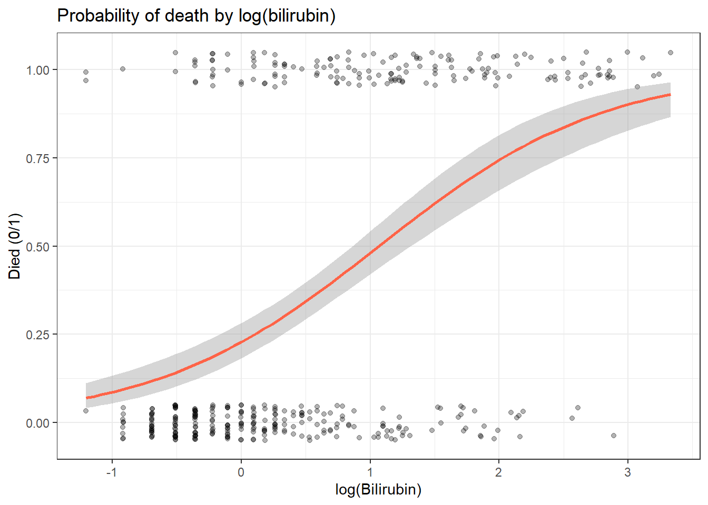
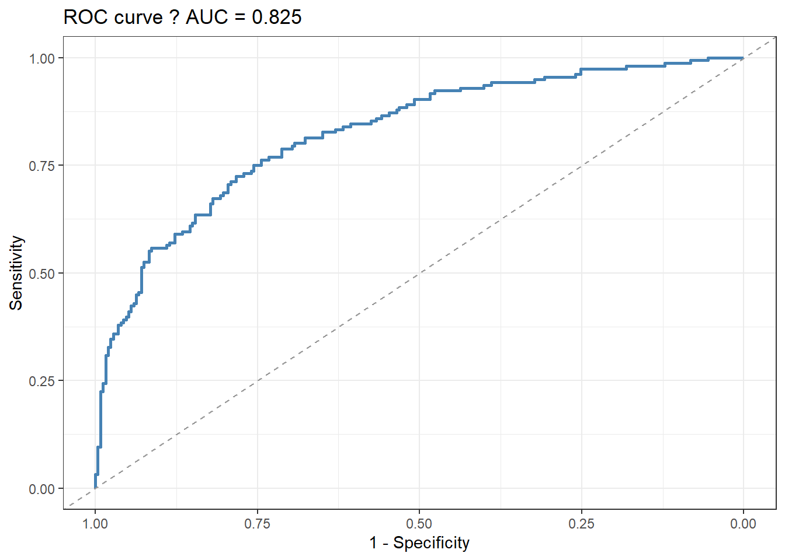
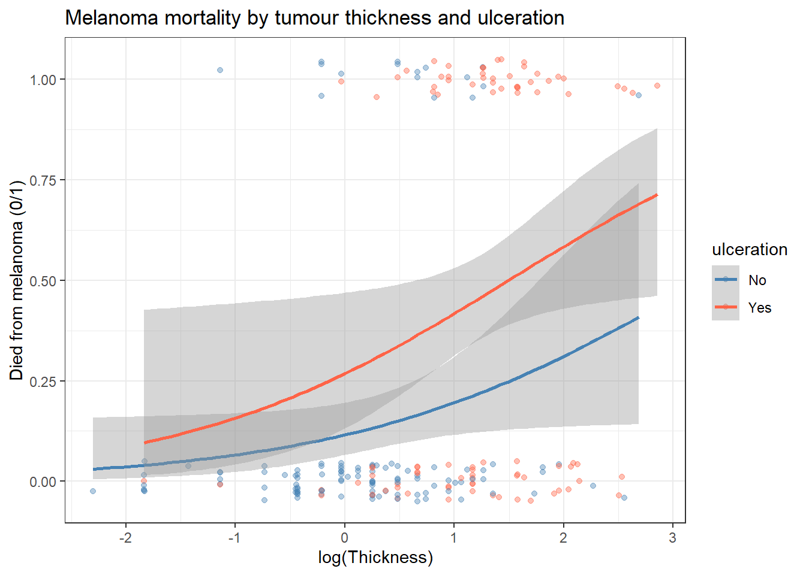

pbc <- survival::pbc %>%
as_tibble() %>%
janitor::clean_names() %>%
mutate(
died = as.integer(status == 2), # 1 = died from liver disease
log_bili = log(bili),
log_proto = log(protime),
sex = factor(sex, levels = c("f", "m"), labels = c("Female", "Male")),
stage = factor(stage, levels = 1:4, labels = paste("Stage", 1:4)),
trt = factor(trt, levels = c(1, 2), labels = c("D-penicillamine", "Placebo"))
) %>%
filter(!is.na(bili), !is.na(protime), !is.na(albumin), !is.na(stage))19 Logistic Regression
Before You Start
Logistic regression shares the same structure as linear regression but models a binary outcome. If you haven’t done so yet, complete the Linear Regression session first.
19.1 When Do You Use This?
Your outcome is binary � yes/no, alive/dead, event/no event � and you want to model how one or more predictors change the probability of that outcome. Logistic regression gives you odds ratios with confidence intervals and lets you adjust for confounders. For example: predicting whether a patient died from liver disease, or whether a tumour responded to treatment.
19.2 Learning Objectives
After completing this session you will be able to:
- Explain the logistic model and why ordinary linear regression is not appropriate for binary outcomes
- Fit a logistic regression with
glm(..., family = binomial)in R - Interpret odds ratios and convert them to probabilities
- Assess model calibration and discrimination with ROC curves and the C-statistic
- Build a multivariable logistic model and adjust for confounders
19.3 Background: The Logistic Model
A binary outcome \(Y \in \{0, 1\}\) cannot be modelled by a straight line ? predicted values could fall below 0 or above 1. Instead, we model the log-odds (logit) of the outcome:
\[\log\left(\frac{P(Y=1)}{1-P(Y=1)}\right) = \beta_0 + \beta_1 X_1 + \cdots + \beta_p X_p\]
Exponentiating the coefficients gives odds ratios (OR):
\[OR = e^{\beta_j}\]
An OR > 1 means the odds of the event increase with \(X_j\); OR < 1 means they decrease.
Converting OR to probability requires knowing the baseline probability. The predicted probability for a patient is:
\[\hat{P} = \frac{1}{1 + e^{-(\hat{\beta}_0 + \hat{\beta}_1 X_1 + \cdots)}}\]
Key distinction: The OR is not the relative risk (RR). For rare outcomes (< 10%), they are approximately equal. For common outcomes, the OR exaggerates the association. When reporting, specify which measure you used.
19.4 Example 1: Clinical Data (PBC)
19.4.1 Predict Mortality from Bilirubin
Always visualise first:
pbc %>%
ggplot(aes(x = log_bili, y = died)) +
geom_jitter(height = 0.05, alpha = 0.3, size = 1.5) +
geom_smooth(method = "glm", method.args = list(family = "binomial"),
color = "tomato", se = TRUE) +
labs(title = "Probability of death by log(bilirubin)",
x = "log(Bilirubin)", y = "Died (0/1)") +
theme_bw()`geom_smooth()` using formula = 'y ~ x'
fit_log <- glm(died ~ log_bili, data = pbc, family = binomial)
summary(fit_log)
Call:
glm(formula = died ~ log_bili, family = binomial, data = pbc)
Coefficients:
Estimate Std. Error z value Pr(>|z|)
(Intercept) -1.2191 0.1450 -8.408 <2e-16 ***
log_bili 1.1413 0.1306 8.736 <2e-16 ***
---
Signif. codes: 0 '***' 0.001 '**' 0.01 '*' 0.05 '.' 0.1 ' ' 1
(Dispersion parameter for binomial family taken to be 1)
Null deviance: 544.73 on 409 degrees of freedom
Residual deviance: 442.71 on 408 degrees of freedom
AIC: 446.71
Number of Fisher Scoring iterations: 3
Reading the
summary() Output for Logistic Regression � Line by Line
Logistic regression output looks similar to linear regression but the numbers mean different things.
Coefficients: table
Estimate Std. Error z value Pr(>|z|)
(Intercept) -2.54 0.22 -11.5 <2e-16 ***
log_bili 0.89 0.09 9.8 <2e-16 ***| Column | What it means |
|---|---|
| Estimate | The log-odds coefficient. Not directly interpretable � exponentiate it to get an odds ratio. |
| Std. Error | Uncertainty in the estimate. |
| z value | Estimate � Std. Error (note: z, not t � logistic uses a normal approximation). |
| Pr(>|z|) | p-value � same interpretation as in linear regression. |
(Dispersion parameter for binomial family taken to be 1) For binomial models this is always 1 � ignore it.
Null deviance: 487 on 374 degrees of freedom The deviance of a model with no predictors (intercept only). This is the baseline � how poorly the null model fits.
Residual deviance: 409 on 373 degrees of freedom The deviance of your model. A large drop from null to residual deviance means your predictor(s) explain a lot. Here: 487 - 409 = 78 units of deviance explained.
AIC: 413 Akaike Information Criterion. Lower = better fit (penalised for complexity). Use AIC to compare models � not to interpret a single model in isolation.
What Does This Actually Tell Us?
The coefficient for log_bili is 0.89 on the log-odds scale. To interpret it:
- Exponentiate to get an odds ratio: \(e^{0.89} \approx 2.4\)
- Translate: Each one-unit increase in log(bilirubin) � roughly a 2.7-fold increase in bilirubin � multiplies the odds of death by 2.4 (95% CI from the OR table).
- Write it up: “Higher bilirubin is strongly associated with mortality in PBC patients. Each 2.7-fold increase in bilirubin is associated with 2.4 times higher odds of death (OR = 2.4, 95% CI: [low]�[high], p < 0.001).”
Remember: odds ratios are not the same as relative risk. An OR of 2.4 does not mean the risk doubles. For rare outcomes (< 10%), OR � RR; for common outcomes, OR exaggerates the association.
19.4.2 Extracting Odds Ratios
# Odds ratios with 95% CI from profile likelihood
tidy(fit_log, conf.int = TRUE, exponentiate = TRUE) %>%
select(term, estimate, conf.low, conf.high, p.value)# A tibble: 2 × 5
term estimate conf.low conf.high p.value
<chr> <dbl> <dbl> <dbl> <dbl>
1 (Intercept) 0.295 0.220 0.389 4.17e-17
2 log_bili 3.13 2.45 4.09 2.41e-18Interpreting the OR: Each one-unit increase in log(bilirubin) multiplies the odds of death by [OR]. Because log_bili is on a log scale, this corresponds to a 2.7-fold increase in bilirubin on the original scale.
19.4.3 Predicted Probabilities
# Probability of death at bilirubin = 1, 2, 5, 10, 20 mg/dL
new_d <- tibble(log_bili = log(c(1, 2, 5, 10, 20)))
new_d %>%
mutate(
pred_prob = predict(fit_log, newdata = new_d, type = "response")
)# A tibble: 5 × 2
log_bili pred_prob
<dbl> <dbl>
1 0 0.228
2 0.693 0.395
3 1.61 0.650
4 2.30 0.804
5 3.00 0.90019.4.4 Multivariable Logistic Model
fit_multi <- glm(died ~ log_bili + log_proto + albumin + stage,
data = pbc, family = binomial)
tidy(fit_multi, conf.int = TRUE, exponentiate = TRUE) %>%
select(term, estimate, conf.low, conf.high, p.value) %>%
mutate(across(where(is.numeric), ~ round(.x, 3)))# A tibble: 7 × 5
term estimate conf.low conf.high p.value
<chr> <dbl> <dbl> <dbl> <dbl>
1 (Intercept) 0 0 0 0
2 log_bili 2.53 1.93 3.36 0
3 log_proto 1523. 67.6 43432. 0
4 albumin 0.755 0.399 1.42 0.383
5 stageStage 2 3.50 0.723 28.0 0.165
6 stageStage 3 4.15 0.904 32.3 0.106
7 stageStage 4 6.52 1.42 50.2 0.03319.4.5 Model Discrimination: ROC Curve and C-statistic
The C-statistic (area under the ROC curve) measures how well the model separates cases from non-cases. C = 0.5 is random; C = 1.0 is perfect discrimination.
library(pROC)Type 'citation("pROC")' for a citation.
Attaching package: 'pROC'The following objects are masked from 'package:stats':
cov, smooth, varpred_prob <- predict(fit_multi, type = "response")
roc_obj <- roc(pbc$died, pred_prob, quiet = TRUE)
cat("C-statistic:", round(auc(roc_obj), 3), "\n")C-statistic: 0.825 ggroc(roc_obj, color = "steelblue", linewidth = 1) +
geom_abline(intercept = 1, slope = 1, linetype = "dashed", color = "grey60") +
labs(title = paste("ROC curve ? AUC =", round(auc(roc_obj), 3)),
x = "1 - Specificity", y = "Sensitivity") +
theme_bw()
19.4.6 Goodness of Fit
glance(fit_multi) # null deviance, residual deviance, AIC# A tibble: 1 × 8
null.deviance df.null logLik AIC BIC deviance df.residual nobs
<dbl> <int> <dbl> <dbl> <dbl> <dbl> <int> <int>
1 545. 409 -201. 416. 444. 402. 403 410A large drop from null to residual deviance indicates good model fit. Compare AIC between models to choose the best specification.
19.5 Example 2: Animal Data (boot::melanoma)
We predict melanoma mortality from tumour thickness and ulceration.
library(boot)
Attaching package: 'boot'The following object is masked from 'package:survival':
amlmel <- boot::melanoma %>%
as_tibble() %>%
mutate(
died = as.integer(status == 1), # 1 = died from melanoma
ulceration = factor(ulcer, levels = c(0, 1), labels = c("No", "Yes")),
sex = factor(sex, levels = c(0, 1), labels = c("Female", "Male")),
log_thick = log(thickness)
)
fit_mel <- glm(died ~ log_thick + ulceration + sex,
data = mel, family = binomial)
tidy(fit_mel, conf.int = TRUE, exponentiate = TRUE) %>%
select(term, estimate, conf.low, conf.high, p.value)# A tibble: 4 × 5
term estimate conf.low conf.high p.value
<chr> <dbl> <dbl> <dbl> <dbl>
1 (Intercept) 0.117 0.0600 0.209 1.13e-11
2 log_thick 1.84 1.21 2.89 5.91e- 3
3 ulcerationYes 2.85 1.34 6.21 7.29e- 3
4 sexMale 1.43 0.713 2.84 3.09e- 1mel %>%
ggplot(aes(x = log_thick, y = died, color = ulceration)) +
geom_jitter(height = 0.05, alpha = 0.4, size = 1.5) +
geom_smooth(method = "glm", method.args = list(family = "binomial"), se = TRUE) +
scale_color_manual(values = c("steelblue", "tomato")) +
labs(title = "Melanoma mortality by tumour thickness and ulceration",
x = "log(Thickness)", y = "Died from melanoma (0/1)") +
theme_bw()`geom_smooth()` using formula = 'y ~ x'
19.6 Where to Find Data Like This
PBC dataset: survival::pbc ? binary mortality outcome with multiple continuous and categorical predictors.
boot::melanoma: Binary mortality with tumour characteristics; good for a smaller Example.
MASS::birthwt: Low birth weight (binary) with maternal predictors ? commonly used in logistic regression teaching.
medicaldata package: Multiple clean clinical trial datasets with binary outcomes.
19.7 What Can Go Wrong
Separation (complete or quasi-complete) If a predictor perfectly separates the outcome (all events on one side), the algorithm fails to converge and produces extreme coefficients with huge SEs. Check with a contingency table or histogram. Use Firth’s penalised logistic regression (logistf package) as a remedy.
Interpreting ORs as relative risks for common outcomes When the outcome prevalence is > 15?20%, OR > RR substantially. If you report ORs, state them clearly and note that they do not equal relative risks.
Events per variable (EPV) rule of thumb Logistic models require approximately 10?20 events per predictor variable for stable estimates. With 50 deaths and 6 predictors, you have EPV ? 8 ? borderline. Consider reducing predictors or using penalised methods.
Not checking calibration A high C-statistic does not guarantee good calibration (that predicted probabilities match observed proportions). Use a calibration plot (val.prob() from the rms package) for clinical prediction models.
Common Misinterpretations � Don’t Make These Mistakes
“OR = 2.4 means the risk is 2.4 times higher” No. An odds ratio of 2.4 means the odds increased 2.4-fold, not the risk. When the outcome is common (> 15%), the OR substantially overestimates the relative risk. If you want relative risk, use a Poisson model with robust standard errors or a log-binomial model.
“C-statistic = 0.80 means my model is good” The C-statistic measures discrimination (can the model rank a case above a non-case?). It says nothing about calibration (are predicted probabilities accurate?). A model can discriminate well but be badly miscalibrated. Always check both.
“My predictor has OR = 1.02, so it has no effect” On the odds ratio scale, even small ORs can be meaningful for very common exposures. Conversely, a large OR for a rare predictor may have little population impact. Report the OR alongside the absolute risk change at clinically relevant predictor values.
“I adjusted for many variables so my result is unconfounded” Adjusting for more variables does not automatically remove confounding. You can only adjust for confounders you measured. Unmeasured confounders remain a threat in all observational studies.
“Quasi-complete separation means my predictor is too good” Separation causes coefficient inflation and numerical instability � it does not mean the predictor is perfectly valid. It usually means you have too few events. Use Firth’s penalised logistic regression.
19.8 Exercises
19.8.1 Exercise 1 (Guided): Univariable Predictors of Mortality
Using pbc:
- Fit separate logistic regressions for each of:
log_bili,albumin,log_proto,stage. - Report OR (95% CI) and p-value for each.
- Which single predictor has the largest OR?
Exercise 1: Solution
predictors <- c("log_bili", "albumin", "log_proto")
results <- map_dfr(predictors, function(pred) {
f <- as.formula(paste("died ~", pred))
m <- glm(f, data = pbc, family = binomial)
tidy(m, conf.int = TRUE, exponentiate = TRUE) %>%
filter(term != "(Intercept)") %>%
mutate(predictor = pred)
})
results %>%
select(predictor, estimate, conf.low, conf.high, p.value) %>%
arrange(p.value)# A tibble: 3 × 5
predictor estimate conf.low conf.high p.value
<chr> <dbl> <dbl> <dbl> <dbl>
1 log_bili 3.13 2.45 4.09 2.41e-18
2 log_proto 43331. 2392. 986265. 3.39e-12
3 albumin 0.258 0.151 0.430 3.60e- 7# Stage
fit_s <- glm(died ~ stage, data = pbc, family = binomial)
tidy(fit_s, conf.int = TRUE, exponentiate = TRUE)# A tibble: 4 × 7
term estimate std.error statistic p.value conf.low conf.high
<chr> <dbl> <dbl> <dbl> <dbl> <dbl> <dbl>
1 (Intercept) 0.111 0.745 -2.95 0.00320 0.0177 0.385
2 stageStage 2 3.00 0.783 1.40 0.161 0.783 19.8
3 stageStage 3 4.04 0.765 1.82 0.0682 1.11 26.0
4 stageStage 4 12.4 0.764 3.30 0.000969 3.42 80.2 19.8.2 Exercise 2 (Semi-guided): Multivariable Melanoma Model
Using boot::melanoma:
- Fit a univariable model:
died ~ log_thick. - Add
ulceration. How does the OR for thickness change? - Add
sex. Is it a significant predictor? - Compare all three models by AIC.
Exercise 2: Solution
m1 <- glm(died ~ log_thick, data = mel, family = binomial)
m2 <- glm(died ~ log_thick + ulceration, data = mel, family = binomial)
m3 <- glm(died ~ log_thick + ulceration + sex, data = mel, family = binomial)
# OR for thickness in each model
bind_rows(
tidy(m1, exponentiate = TRUE) %>% mutate(model = "1: thickness"),
tidy(m2, exponentiate = TRUE) %>% mutate(model = "2: + ulceration"),
tidy(m3, exponentiate = TRUE) %>% mutate(model = "3: + sex")
) %>%
filter(term == "log_thick") %>%
select(model, estimate, p.value)# A tibble: 3 × 3
model estimate p.value
<chr> <dbl> <dbl>
1 1: thickness 2.53 0.00000336
2 2: + ulceration 1.91 0.00332
3 3: + sex 1.84 0.00591 # AIC comparison
AIC(m1, m2, m3) df AIC
m1 2 219.3203
m2 3 213.3625
m3 4 214.335019.8.3 Exercise 3 (Open-ended)
Using your own data, identify a binary outcome and at least two predictors. Fit a multivariable logistic regression. Report: ORs with 95% CIs, C-statistic, and a calibration check. Write a one-paragraph Methods section and a one-paragraph Results section as you would for a clinical paper.
19.9 Comprehension Check
- You fit logistic regression and get a coefficient of 0.8 for log_bili. What is the odds ratio, and what does it mean?
- Your outcome occurs in 40% of the study sample. A colleague reports OR = 2.5 as “roughly a doubling of risk.” Is this correct?
- You have 30 events and want to include 8 predictors. What is the concern?
- C-statistic = 0.75. Is this a good model? What additional checks should you do?
- Your model fails to converge. The output shows a coefficient of 25 with SE = 1000 for one predictor. What is likely happening, and what should you do?
Answers
- OR = exp(0.8) = 2.23. Each one-unit increase in log(bilirubin) is associated with 2.23 times higher odds of the event (e.g., death), holding other predictors constant.
- No. When the outcome is common (40%), OR ? RR. OR = 2.5 for a 40% baseline corresponds to a RR considerably less than 2.5. The colleague is conflating the odds ratio with the risk ratio ? a common error. Use
prop.table()or the formula \(RR = OR / (1 - P_0 + P_0 \times OR)\) to convert. - With EPV = 30/8 = 3.75, the model is severely underpowered. Coefficients will be unstable and confidence intervals very wide. You should reduce the number of predictors to at most 2?3, or use Firth’s penalised logistic regression.
- C = 0.75 indicates moderate discrimination ? the model correctly ranks 75% of case-control pairs. However, a high C-statistic does not guarantee good calibration. You should also produce a calibration plot (observed vs predicted proportions across deciles of risk) to confirm the model gives accurate probabilities.
- This is (quasi-)complete separation: the predictor almost perfectly predicts the outcome, so the algorithm tries to push the coefficient to ?8 and fails. Check by tabulating the predictor against the outcome. Remedy: use Firth’s penalised logistic regression (
logistf::logistf()), which regularises the likelihood and produces finite, stable estimates.
19.10 Further Reading
- Hosmer, Lemeshow, and Sturdivant (2013) — Applied Logistic Regression, the standard reference
- Bland (2015) — Logistic regression in An Introduction to Medical Statistics
?glmin R ? full documentation for generalised linear modelspROCpackage vignette for ROC analysislogistfpackage for Firth’s penalised logistic regression
Bland, Martin. 2015. An Introduction to Medical Statistics. 4th ed. Oxford University Press.
Hosmer, David W., Stanley Lemeshow, and Rodney X. Sturdivant. 2013. Applied Logistic Regression. 3rd ed. John Wiley & Sons.